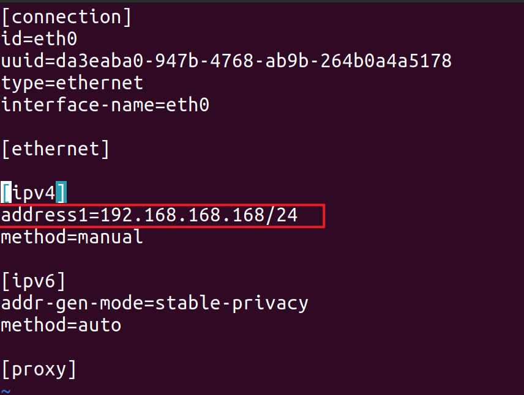
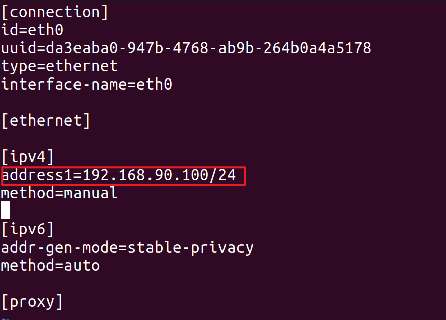

5.6 修改有线网口IP地址
step1.使用终端工具或 ssh 工具进入四足机器人
ssh firefly@192.168.234.1
step2.编辑 eth0 的配置文件
sudo vim /etc/NetworkManager/system-connections/eth0.nmconnection
如果要修改四足机器人的RJ45口的IP地址， 修改 address1=192.168.168.168/24 为你需要修改的IP，例如 192.168.90.100/24

